如果你是在对一台远程服务器进行备份或者恢复操作，或者你操作的数据库数量特别庞大，那么我们建议你使用命令行工具而不要使用 pgAdmin，因为此种情况下操作过程本来就已经很耗时，使用 pgAdmin 操作会使得耗时和复杂度增加。另外也请牢记：对于
如果你是在对一台远程服务器进行备份或者恢复操作，或者你操作的数据库数量特别庞大，那么我们建议你使用命令行工具而不要使用 pgAdmin，因为此种情况下操作过程本来就已经很耗时，使用 pgAdmin 操作会使得耗时和复杂度增加。另外也请牢记：对于 pg_dump 转储的自定义压缩格式、TAR 包格式、目录格式这三种二进制格式的备份文件，必须使用与 pg_dump 相同或者更新版本的 pg_restore 工具来进行恢复。
pgAdmin 工具的功能丰富而强大，本书的篇幅不足以完全描述，因此我们仅重点介绍一些比较常用的功能。
尽管 pgAdmin 拥有功能强大的图形界面，但有些时候还是离不开 psql。比如需要执行 pg_dump 或其他数据转储工具生成的体积庞大的 SQL 文件时，psql 就更合适。从 pgAdmin 界面上可以很容易地打开 psql 工具，只需点击“插件”菜单下的“PSQL Console”项即可，如图 4-3 所示。这样就会启动一个 psql 窗口并连接到当前 pgAdmin 环境中已连接的 database 上，然后你可以使用 \cd 以及 \i 命令来改变目录并执行 SQL 文件。
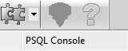
图 4-3：psql 插件
请注意：该功能需要确保针对某 database 的连接已建立好，因此只有当 pgAdmin 已连上 PostgreSQL 服务器并选中某个 database 时，“插件”菜单下的“PSQL Console”项才会变成可用状态。
只要服务器上安装了 adminpack 扩展包，你就可以在 pgAdmin 界面上直接编辑配置文件。一般来说，PostgreSQL 的一键式安装包都会自动安装好 adminpack 扩展包，你可以看到 Server Configuration（服务器配置）菜单已启用，如图 4-4 所示。
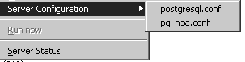
图 4-4：pgAdmin 配置文件编辑器
如果你的 pgAdmin 已连接到 PostgreSQL 服务器但 Server Configuration（服务器配置）菜单却是灰的，那么要么是没安装 adminpack，要么是你不是以超级用户身份登录的。如果要在 PostgreSQL 9.0 或者更早版本的服务器上安装 adminpack，请以 postgres 超级用户身份登录然后运行脚本 share/contrib/adminpack.sql。对于 PostgreSQL 9.1 以及之后的版本来说，请以 postgres 用户身份登录并执行 CREATE EXTENSION adminpack，或者也可以通过图形界面来安装，如图 4-5 所示。安装好以后请断开与服务器之间的连接并重连，然后就可以看到菜单已可点击。
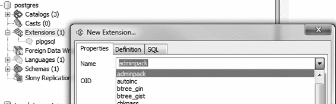
图 4-5：使用 pgAdmin 安装扩展包
pgAdmin 允许你创建各种数据库资产并对其进行权限设置。
1. 创建数据库以及其他数据库资产
利用 pgAdmin 创建一个新的数据库是非常简单的，只需右键单击树上的 database 节点并选择 New Database（新建数据库）即可，如图 4-6 所示。Definition（定义）选项卡上提供了一个下拉菜单供选择建库所用的模板数据库，我们在 2.4.1 节中介绍过相关内容。
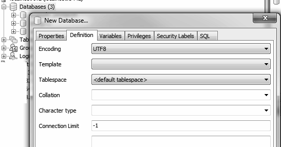
图 4-6：创建新数据库
创建角色、schema 和其他数据库资产的步骤是类似的，都有一些对应的相关页面供你设置其他属性。
2. 权限管理
在 PostgreSQL 数据库资产权限管理方面，不会有比 pgAdmin 的授权向导更好的管理工具了，你可以通过菜单栏上的 Tools（工具）→ Grant Wizard（授权向导）打开其页面。如同其他许多功能项一样，在成功连到数据库之前，其菜单项一直都是灰的。另外该菜单项对于当前树状目录上的焦点位置也很敏感，点击到不同位置时，该菜单项就会显示出可用或者不可用等不同状态。例如，要为 cesus 这个 schema 中的项设置权限，请在目录树上选中此 schema 并点开授权向导，界面如图 4-7 所示。然后你就可以选择所有或者部分项，然后切换到“权限”选项卡上以设置你想要授予的角色和权限。
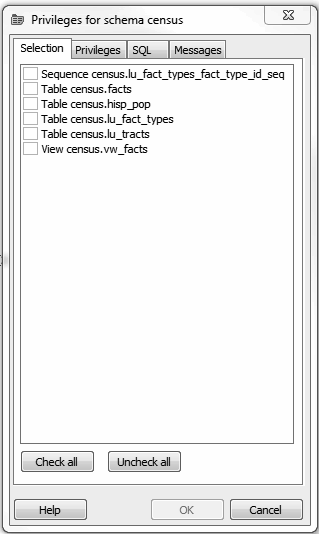
图 4-7：授权向导
除了为已有对象授权以外，我们日常遇到更多的一个场景是为一个 schema 或者 database 中新建的对象设置默认权限。要执行此类授权，请右键单击 schema 或者 database 对象节点，然后选择“属性”菜单项，然后在弹出的界面上点击切换到“默认权限”选项卡，如图 4-8 所示。请注意：“默认权限”这一功能特性仅仅适用于 PostgreSQL 9.0 及之后的版本。
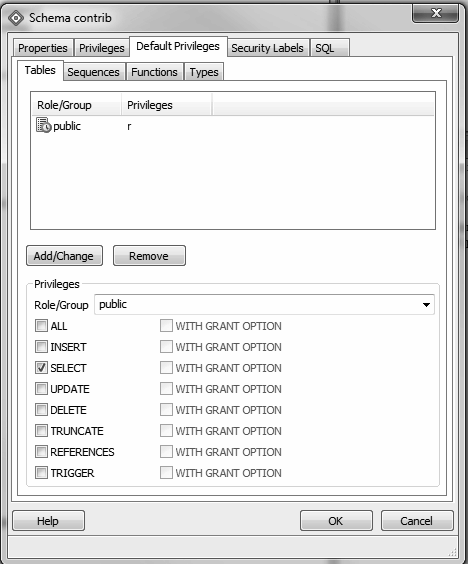
图 4-8：默认授权管理
当为 schema 授予默认权限时，请记得一定要为相应的组角色授予访问此 schema 的权限。
同 psql 一样，pgAdmin 也可以导入和导出文本文件。
1. 导入文件
pgAdmin 的导入功能其实是对 psql 的 \copy 命令做了一层封装，并要求导入数据的目的表必须已建好。要实现数据导入，请在要导入数据的表上单击鼠标右键，如图 4-9 所示。
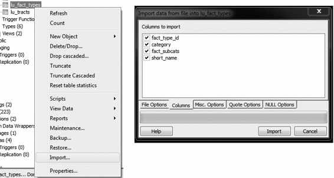
图 4-9：Import（导入）菜单
2. 将数据导出为结构化文件或者报表格式
除了导入数据，你还可以将数据导出为分隔符分隔的文本文件格式以及 HTML 或者 XML 格式。要导出为分隔符文本格式，请按以下步骤操作。
(1) 打开查询窗口（）。
(2) 编写查询语句。
(3) 执行查询语句。
(4) 点击菜单栏上的 File（文件）→Export（导出）。
(5) 按照图 4-10 填写设置内容。
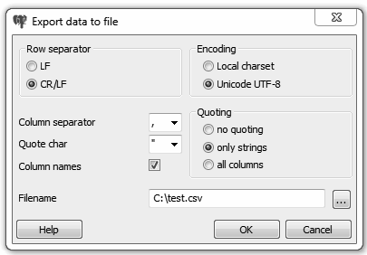
图 4-10：Export（导出）菜单
导出为 HTML 或者 XML 的步骤非常类似，唯一的差别在于需要点击菜单栏上的 File（文件）→Quick Report（快速报表）选项，参见图 4-11。
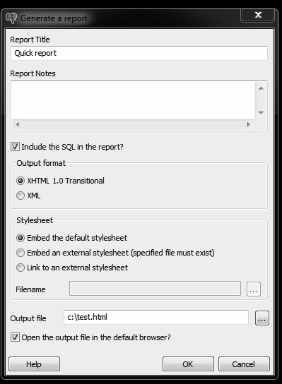
图 4-11：导出报表选项
pgAdmin 为 pg_dump 和 pg_restore 提供了图形化的操作界面，相关具体功能已在 2.7 节中介绍过。本节内容中，我们将重复使用一些前面已经使用过的例子，不过是使用 pgAdmin 来执行操作，而非使用命令行。
如果你的机器上安装了多个版本的 PostgreSQL 或 pgAdmin，我们建议你先确认 pgAdmin 指向了正确版本的 PostgreSQL 的 bin 目录（即 pg_dump、pg_restore 等命令行工具所在目录），可以通过检查 pgAdmin 的 bin 目录设置来确认，如图 4-12 所示。
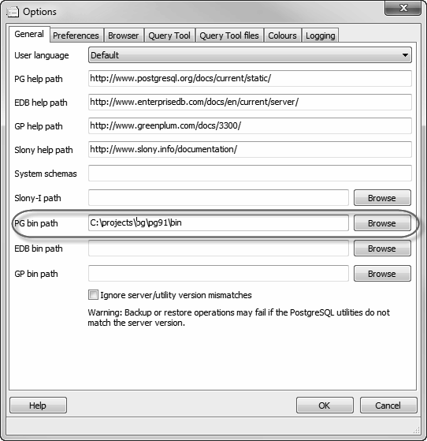
图 4-12：pgAdmin File（文件）→Options（选项）菜单
pg_dump转储的自定义压缩格式、TAR 包格式、目录格式这三种二进制格式的备份文件，必须使用与pg_dump相同或者更新版本的pg_restore工具来进行恢复。
1. 完整备份一个database中的数据
在 2.7.1 节中，我们已经演示了如何完整备份一个 database。以下我们使用 pgAdmin 界面重复演示一遍操作过程，请右键单击待备份的 database，并选择 Custom（自定义）格式，如图 4-13 所示。
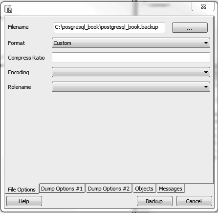
图 4-13：备份 database
2. 备份系统级对象
pgAdmin 为 pg_dumpall 提供了一个图形化界面，用于对系统对象进行备份。要使用该界面，请先连接到希望备份的 PostgreSQL 服务器。然后从顶部菜单中选择 Tools（工具）→Backup Globals（全局备份）。
pgAdmin 不支持指定备份哪些全局对象，但在 pg_dumpall 的命令行界面上是可以的。pgAdmin 默认会备份所有的系统表空间和角色。
如果你希望备份整个服务器端的所有数据，可以通过点击菜单栏上的 Tools（工具）→Backup Server（备份服务器）来实现。
3. 选择性地备份部分数据库资产
pgAdmin 为 pg_dump 的选择性备份功能提供了一个图形化接口。在希望备份的数据库资产上右键单击，然后在弹出的菜单中选择 Backup（备份）（如图 4-14 所示）。你可以选择备份整个 database、一个特定的 schema 或者任何其他数据库资产。
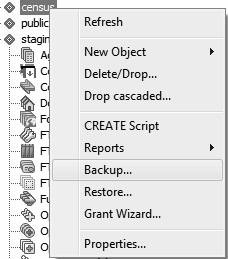
图 4-14：pgAdmin 的 schema 备份
如果希望仅备份当前图形界面上选中的数据库资产，那么你可以忽略备份界面上的其他选项卡（如图 4-13 所示），只用默认设置即可。当然，你也可以切换到 Objects（对象）选项卡选择备份更多对象，如图 4-15 所示。
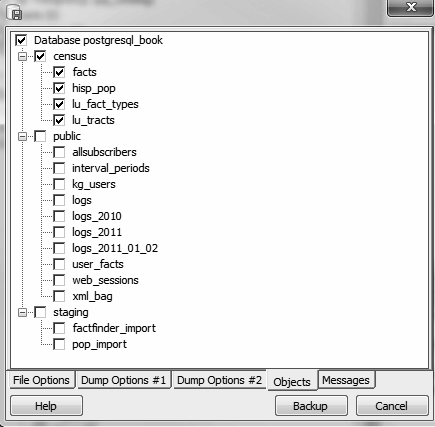
图 4-15：pgAdmin 的选择性备份 Objects（对象）选项卡
pgAdmin 在后台其实就是调用了
pg_dump命令行工具来实施备份动作，如果你希望了解 pgAdmin 最终使用的命令是什么样子，那么可以在点击 Backup（备份）按钮开始执行备份后切换到备份界面最右侧的 Messages（消息）选项卡，其中会记录系统自动生成的带实参的pg_dump命令行。